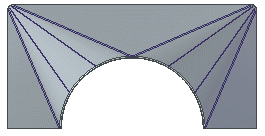
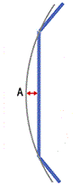
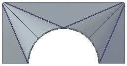
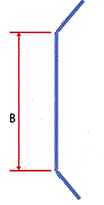
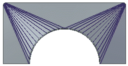
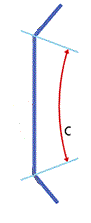
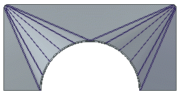

Bending Method page
- Advanced
-
Use this option when creating only planar, cylindrical, and conical geometry that can be flattened. This option supports bend lines and vertex mapping. System generated bends may be added.
Note:This is the default option.
- Bends
-
Use this option when creating only planar plates and bends. Any cylindrical and conical regions are triangulated to planar plates and bends. This option supports vertex mapping, but does not support bend lines. System generated bends may be added.
- Formed
-
Use this option to access pre-Solid Edge 2020 functionality, which may create non-planar, non-cylindrical, or non-conical faces that might not flatten. This option does not support vertex mapping, but does support bend lines.
- Bend Lines
-
Specifies that bend lines, without actual bends, are created within each bend region.
- Number of resultant bends
-
Specifies the total number of incremental bends that are created for each bend. In this example, the number of bends was set to 4, and so there are 4 bend lines within the region.

Note:This option is only available if you select the Bend Lines option.
- Number of segments in arcs
-
Specifies the total number of segments that each arc should be broken into. In this example, the number of segments was set to 4 and so there are 4 segments within the region.
Note:This option is only available if you select the Bends option.
- Maximum chord height: (A)
-

Specifies the maximum value for how far from the curve the planar regions can be.

- Maximum segment length: (B)
-

Specifies the maximum distance between the bend hit lines.

- Maximum segment angle: (C)
-

Specifies the maximum angle between two adjacent bend lines. With this option, Solid Edge calculates how many bends will fit within the bend region so that the angle between bend lines is smaller or equal to the angle value you enter.

- Index Mark Length
-
Specifies the length of the index marks that are created when you use the Save as Flat command to save a flat model of the sheet metal part.